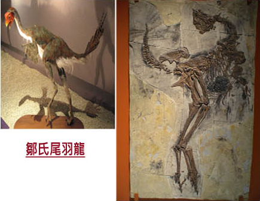
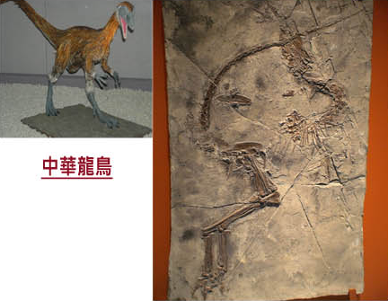
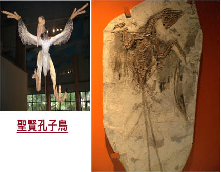
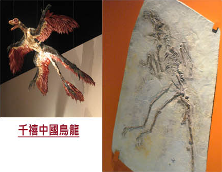

來自中國帶有羽毛的恐龍




來自中國帶有羽毛的恐龍─到了90年代，更多的研究支持鳥起源自小型肉食性恐龍的想法，如果這想法是正確的話， 在這類恐龍演化到鳥的過程中，應該會有一些帶有羽毛的中間類型吧？這種中間類型真的存在嗎？
支持這種想法的重要證據終於在1996年之後，陸續在中國東北的遼寧省發現。最早發現的一種稱為「中國龍鳥」的小型肉食性恐龍， 其背部長有稠密的絨毛。稍後在「尾羽龍」及「原始組鳥」的化石上，已看到與現生鳥類相似的真羽； 還有1999年的「千禧中國鳥龍」及2003年的「四翼恐龍」(顧氏小盜龍)等一系列的化石發現，為鳥類源自恐龍論點提出強而有利的證據。
雖然有眾多的化石與理論支持，但仍有少部分科學家認為鳥和帶毛恐龍是因為有相近的生活方式，所以才都長有羽毛。 這一群科學家更已BAND(Birds Are Not Dinosaurs)，「鳥不是恐龍」一名自居。